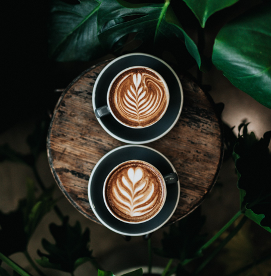
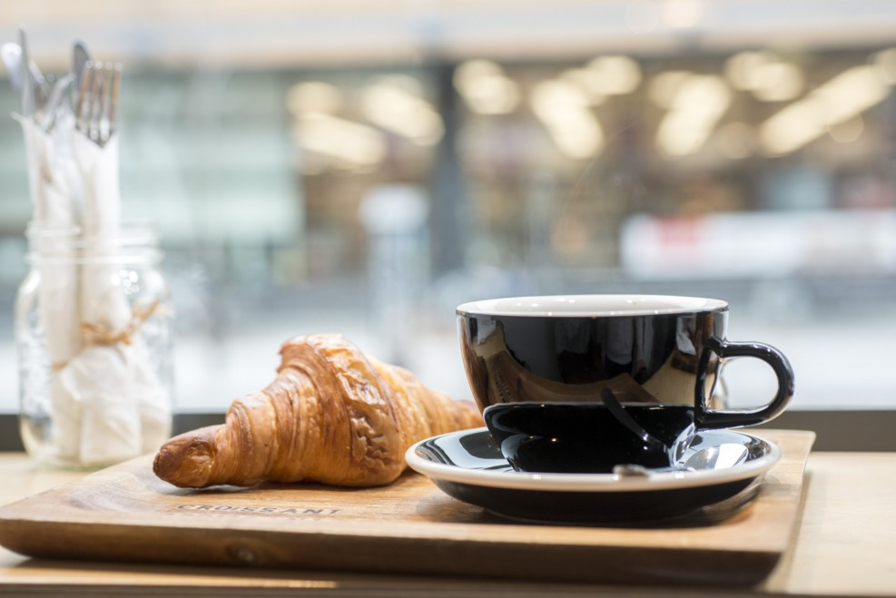
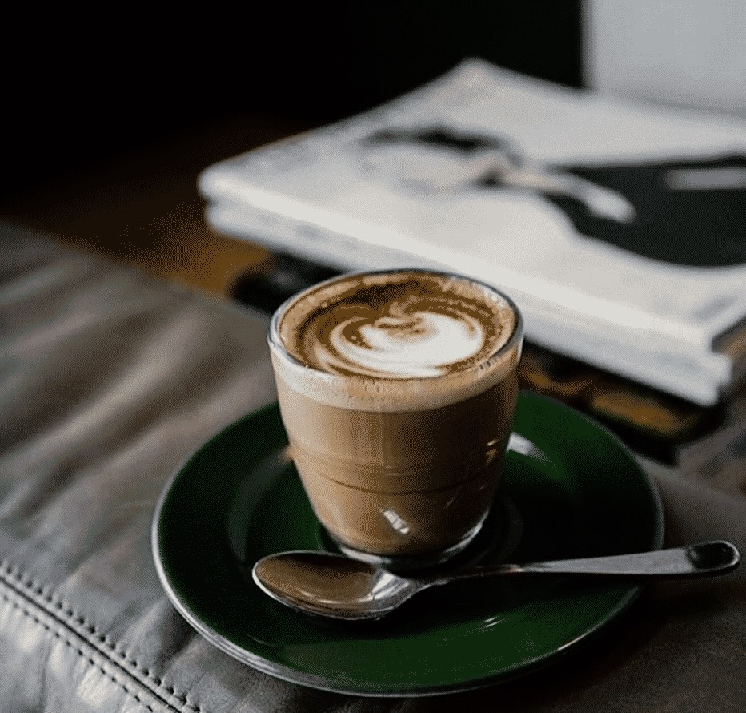

Virtue Coffee has been proudly serving in the community
of Winnipeg since 2017. Its founders, Jane and George,
are a husband-and-wife team that began their journey five
years ago with a small café and a big dream, with the desire
to bring customers from all over different blends of coffee
and tea that are sourced only from high quality, fair trade
and sustainable coffee/tea farmers.
With the growing market and doing our best to overcome the
COVID-19 pandemic, we miss seeing customers both new and old,
and we understand that times have been hard for everyone.
Now more than ever, people need a pick-me-up to help start
their days right. Virtue Coffee wants to offer more to our
community not only within our main shop and soon-to-be expanding
franchises across the city, but also through our new website.
Ever wonder where your favourite cappuccino drink or Earl Grey
tea came from? Here, we can share with you where we get our
premium products that you can now enjoy making at home and
everywhere else!

Our Values
Exceptional customer service is one of the many things Jane
and George are proud of, as it is part of the recipe to their
success in not only their company but also in the relationships
they have built within the community. Now, in an effort to
further make that connection stronger and more accessible,
their website features a client feedback of their service and
any suggestion that they can use to improve or add new services
is more than welcome as we put our valued customers first. It
can also be used to promote new coffee and tea that they will
be bringing in order to give the spotlight to our partners’ products
and, if anyone has any special request or interest in a product
you believe we should have, we are always open to adding to our
expanding library and collaborating with new partners that share
our goals.

Why Choose Us?
We understand making the perfect cup can be learning process,
which is why Virtue Coffee will be providing information on
the products you need to make the drink you want, from helping
you understand the different types of coffee, tea or equipment
that our company carries and uses to serve you in our establishments,
to also having our recipes and tutorials accessible for you to
make the experience that much more enjoyable and easy. Jane has
also been going to bakery school and she has been making a variety
of baked goods such as cakes, muffins, cookies, croissants, and
more as an added touch to not only serve coffee and tea but also
have some delicious sweets to compliment them.

Sustainability
Though it has only been a year since we began selling
exclusively- selected fair trade and sustainable brands, it is a
change we whole- heartedly embrace and are proud of. Our partners
from all over the world, from the savoury-rich blends from Salt
Spring Coffee and Level Ground, to the divine herbs of Equal Exchange
and Little Red Cup, and many more, these growers and Virtue Coffee
both have the same passion and mission; to ensure the products we
serve come from an honest and reliable source, giving those
communities who work hard to help us fair-wages, safe-working
environments and strong bonds. We only work with the best and will
give our amazing customers nothing short of that promise.